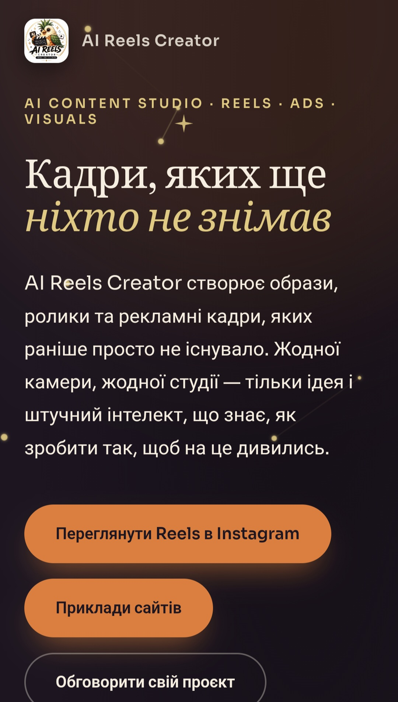

Promotional site for a studio that produces AI-generated reels, ad footage, and visuals for brands on social media.

A dark theme with a starry sky and a golden-orange accent highlights the "magic" of AI generation — content that didn't exist before it was created. A large serif headline with an accented italic phrase sets the emotional tone right on the hero screen, and two primary buttons guide the visitor either to watch finished reels on Instagram or to browse examples of websites.
A finished single-page site, deployed and available online, with clear navigation to the studio's social channels and portfolio examples.